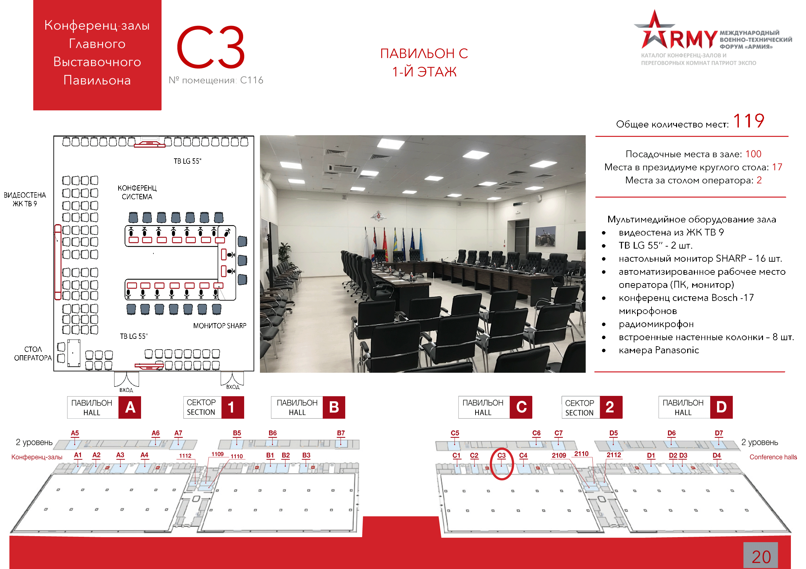

: 26.08.2020
: 15:00 - 19:00
: Конференц-зал C3
: Ассоциация "Доверенная платформа"
: Железновская Татьяна, исполнительный директор Ассоциации "Доверенная платформа". Тел: +7(903)508-1185, tz@trustform.org
Основным вектором развития современного общества является курс на Цифровую Экономику. Реализация данного направления невозможно без обеспечения гарантий безопасности и доверия в рамках критической информационной инфраструктуры. Именно поэтому в настоящее время ведется большая работа по совершенствованию российской нормативной базы, а также разработка российских технологических решений, которые позволят реализовать современные цифровые сервисы при наличии гарантий доверия и безопасности.
15.00 – 16.30
ЧАСТЬ I
«Сквозные технологии доверия и безопасности, как механизм создания защищенной информационной среды»
Модераторы – Шпак Василий Викторович, директор Департамента радиоэлектронной промышленности Минпромторга РФ, Тихонов Андрей Иванович, президент Ассоциации «Доверенная платформа».
Вопросы к обсуждению:
- Пути обеспечения гарантий доверия и безопасности в условиях цифровизации экономики.
- Вопросы «суверенитизации» инфраструктуры ИТК
- Гармонизация стандартов и нормативной базы, исходя из требований доверия и безопасности для разных категорий пользователей
- Разработка российских технологических решений, которые позволят реализовать современные цифровые сервисы при наличии гарантий доверия и безопасности.
- Текущее состояние импортозамещения и приоритетные задачи, создание практик импортозамещения.
- Технологические барьеры и пути их решения для российских производителей оборудования 5G.
Участники дискуссии:
- Зубарев Николай Вадимович, директор по направлению «информационная безопасность» АНО «Цифровая Экономика».
- Массух Илья Иссович, директор Центра Компетенций по импортозамещению в сфере ИКТ.
- Шевцов Дмитрий Николаевич, начальник Управления ФСТЭК России.
- Представитель Минкомсвязи России - на согласовании.
- Аветисян Арутюн Ишханович, директор ИСП РАН.
- Букашкин Сергей Анатольевич, АО «Концерн «Автоматика».
- Духвалов АндрейАндрей Петрович, руководителем Департамента перспективных технологий ООО «Лаборатория Касперского».
- Легостаева Светлана Сергеевна, генеральный директор АНО развития радиоэлектронной отрасли «Консорциум «Вычислительная техника».
- Фролов Денис Владимирович, генеральный директор ООО «НМ-ТЕХ».
- Хасьянова Гюльнара Шамильевна, генеральный директор АНО "Консорциум "Телекоммуникационные Технологии", генеральный директор ПАО «Микрон».
- Ходаковский Игорь Александрович, руководитель ЭКБ направления «Концерн Калашников», генеральный директор ООО «ТСВК».
16.30 – 17.30
ЧАСТЬ II
Презентационная сессия «Диверсификация ОПК в интересах нацпроекта Цифровая экономика»
Модераторы – Зубарев Николай Вадимович, директор по направлению «информационная безопасность» АНО «Цифровая Экономика», Тихонов Андрей Иванович, президент Ассоциации «Доверенная платформа».
Ключевые цели нацпроекта - увеличение внутренних затрат на развитие цифровой экономики, создание устойчивой и безопасной информационно-телекоммуникационной инфраструктуры высокоскоростной передачи, обработки и хранения больших объемов данных.
На презентационной сессии планируется рассмотрение вопросов по возможностям участия в реализации нацпроекта для предприятий ОПК с опорой на российскую электронную промышленность на примерах федеральных проектов Цифровой Экономики.
- Бирюков Сергей Евгеньевич, заведующий отделением проектирования и разработки прикладных информационных систем ФИПС Роспатент. «Клиентоцентричная модель цифровой трансформации Роспатента».
- Борисов Александр Анатольевич, генеральный директор АО "НПП "Исток" им. Шокина".
- Бутко Андрей Борисович, генеральный директор АО РАСУ.
- Касперская Наталья Ивановна, президент группы компаний InfoWatch.
- Кравченко Константин Юрьевич, советник генерального директора АО «НПК «УралВагонЗавод».
- Кузнецов Станислав Константинович, заместитель Председателя Правления ПАО «Сбербанк России».
- Мазур Максим Юрьевич, начальник 9 отдела департамента военно-экономического анализа. «Цифровая экономика – вызов для ОПК».
- Сахненко Сергей Степанович, индустриальный директор Радиоэлектронного комплекса Государственная корпорация «Ростех».
17.30 – 19.00
ЧАСТЬ III
Реализация цифровых сервисов с учетом гарантий доверия и безопасности на примерах предприятий ОПК
Модераторы – Боков Сергей Иванович, первый заместитель директора ФГУП "МНИИРИП", заведующий базовой кафедрой менеджмента в сфере систем вооружения РТУ МИРЭА, Тихонов Андрей Иванович, президент Ассоциации «Доверенная платформа».
- Бережной Алексей Анатольевич, начальник Управления сопровождения проектов развития промышленности ГБУ «Агентство промышленного развития города Москвы». «Формирование банка технологий и разработок для московской промышленности».
- Бочаров Алексей Юрьевич, генеральный директор АО "НПО Русбитех".
- Гайфутдинов Эльдар Альбертович, директор Центра по управлению технологическими партнерствами ПАО «Ростелеком».
- Давыдов Александр Евгеньевич, заместитель генерального директора АО "НПП "Исток" им. Шокина".
- Ишметьев Евгений Николаевич, представитель МАК "Вымпел" по развитию бизнеса, д.т.н. «ПТК «Монитор-предиктив».
- Калайда Игорь Алексеевич, генеральный директор ООО «НИИ СОКБ».
- Купцов Сергей Владимирович, коммерческий директор АО «Воентелеком».
- Курашев Дмитрий Сергеевич, генеральный директор ООО «Юзергейт».
- Сизоненко Григорий Евгеньевич, генеральный директор АО «ИВК».
- Смирнов Павел Игоревич, генеральный директор «НИИ «Масштаб».
